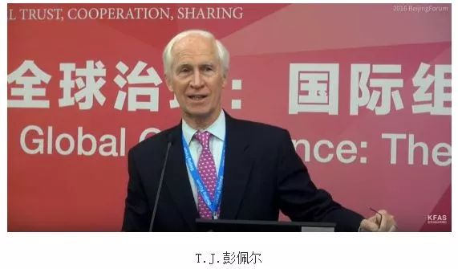

收录于合集
作品简介
【作者】 T.J.彭佩尔，美国加州大学伯克利分校政治学讲席教授，曾担任该校东亚研究所（IEAS）所长。主要研究领域是比较政治、日本政治经济、东亚区域问题。
【编译】 姚寰宇（国政学人编译员，山东大学国际政治专业硕士）
【校对】 孙通
【审核】 徐琛
【排版】 贺奕
【来源】 Pempel, T. J. (2019). Regional decoupling: the Asia-Pacific minus the USA?. The Pacific Review , 32 (2), 256-265.
期刊介绍
The Pacific Review《太平洋评论》是太平洋地区研究的主要平台，作为跨学科期刊，其宗旨和目标为打破研究领域之间以及学术界、新闻界、政府和商界之间的壁垒，重点关注政策问题。2018年该刊的影响因子为1.865，在区域研究类SSCI期刊中排名9/47，在国际关系类SSCI期刊中排名第22/91。
区域脱钩：去美国的亚太？
Regional decoupling: the Asia-Pacific minus the USA?

内容提要
本文检视了美国与不断扩大的东亚和亚太区域制度生态系统之间的相互作用。作者以2008年全球金融危机以来的时期为重点，分析了当下如雨后春笋般遍及整个亚太地区的“竞争性区域主义（rival regionalisms）”现象。当下亚太地区面临的主要问题是，各种名义上相互合作的机制之间的竞争和各国之间持续的猜疑，使得想要建立能够解决该区域最具争议的问题的区域机构的努力付诸东流。尽管如此，国家对贸易类和金融类的区域组织（regional bodies）所表现出的不信任则没有那么明显——许多行为体都认为在这类组织中可以解决问题并实现双赢，尽管它们对涉及硬安全（hard security）的问题上的态度则没有那么乐观。文章最后探讨了唐纳德·特朗普当选美国总统后，在其任内的美国与亚太区域机制之间可能要出现的一种新的脱离现象（disengagement）并产生一定后果。
文章导读
长期以来，美国一直对东亚和亚太地区的区域机制感到矛盾。在冷战期间美国与东亚的接触几乎全部是通过其轴辐式同盟（hub-and-spoke alliances）进行的。冷战结束后，东亚地区几乎没有区域制度，而以美国为首的联盟也失去了其原有的正当性。美国国内就如何妥善处理亚太地区的问题争论不休，但最终以美国为首的双边联盟体系得到了增强而非被抛弃——美国及其盟友依旧通过这些制度结构对东亚地区发挥集体影响。 在冷战结束后的四分之一世纪里，美国的政策制定者以不同程度的鼓励、参与和排斥的态度，注视着东亚各国针对不同问题而拼凑起的各类多边制度，其中最突出的便是 “多边主义1.0（multilateralism 1.0）”。 面对国际金融危机（2008~2009）过后出现的多边主义2.0（multilateralism 2.0），美国依旧感到十分矛盾。奥巴马政府整体上对通过新的多边组织参与区域事务表现出极大的热情，但其实际行动有时却不符合多边主义原则（multilateralism- in-principle），如奥巴马对中国倡导的亚洲基础设施投资银行（AIIB）和金砖国家开发银行（BRICS New Development Bank）的消极反应，以及对无条件重启六方会谈的抵触。与之形成鲜明对比的是，新任总统唐纳德·特朗普在就职前一年的竞选活动中就在“让美国再次伟大”的口号下，承诺要放弃或淡化许多美国在区域和多边制度中长久以来所承担的义务。特朗普政府上台之初便开始一意孤行地推行单边主义（反多边主义）的外交政策。 美国若继续沿用特朗普政府的议程将大幅削弱美国在东亚多边机制中的存在和影响力——这毫无疑问将对亚太多边机制，甚至是对整个亚太地区的总体平衡产生巨大影响。
一、 美国与区域多边主义的扩张
The USA and the expansion of regional multilateralism
由于种种原因，冷战后美国在东亚地区创建的轴辐式同盟体系（the hub-and-spoke alliance system）并没有像西欧一样形成覆盖全面、议程有效的区域多边机制。而且从那时起，美国不同政府上台后对亚太区域机制的态度也不尽相同。美国最初开始认真对待并参与到这些机制中的行动可以追溯到1989年由日本和澳大利亚——两个极度担心美国脱离亚洲的国家——提议创建的亚太经合组织论坛（APEC forum）和随后在1994年提出的以安全导向的东盟地区论坛（ARF）的倡议。当时的克林顿政府对地缘经济予以重视，对APEC和ARF都积极地支持和参与。但是随着APEC的部门自愿提前自由化（Early Voluntary Sector Liberalization, EVSL）进程的失败，以及日本对美国开放其农林业市场的抵触，美国的热情也开始消退。在所谓的“全球反恐战争（Global War on Terror）”期间，小布什总统试图将APEC进行安全化（securitize）的尝试失败后使得美国与APEC近一步疏远。与APEC划清界限的同时，小布什政府高调奉行“菜单式多边主义（或‘工具多边主义’，a la carte multilateralism）”，退出了6项国际条约，推行“要么支持我们，要么反对我们（with us or against us）”的单边主义标准。这使得美国高层官员参加地区多边会议的数量一落千丈，也近一步拉大了美国与东亚多边主义的距离。
美国的这种自我孤立的行为背后是1997年至1998年亚洲金融危机后由东盟推动创立的一系列金融机构。这些新机制试图在东亚经济体与美国和国际货币基金组织（IMF）之间进行缓冲——他们认为美国和IMF的无理要求数十年来一直是东亚经济发展的重要威胁。新机制试图提供一个对冲（hedge）、一个“防火墙”或者是一种软制衡（soft balancing）用以应对没有任何缓冲的全球化所带来的严重后果。许多国家的政府将多边行动与国内自我保险（如扩大外汇储备的战备基金）相结合。这些新机制包括清迈倡议（东盟10+3，以及随后的清迈倡议多变化协议CMIM）、两个亚洲债券市场和东亚峰会（EAS）。随着大量的双边自由贸易协定（FTAs）涌入该地区，美国已然发现自己正成为一个局外人。这些新机制和FTA的组合，使得作为地区生产网络一部分的公司之间的跨境联系正变得正式化、一体化和便利化。而且这些组织的成员大多都是亚洲人。东亚峰会正超越金融和经济领域，开始尝试解决一些更棘手的问题，如海上合作、环境污染、移民问题甚至是地区安全问题。
奥巴马政府认为美国在伊拉克和阿富汗的战争中错误地指向了不存在的威胁，甚至使得财政部和决策者的注意力从更具战略和经济重要性的亚太地区进行了转移。因此奥巴马果断采取行动重新参与进亚太事务和多边机制中。奥巴马政府致力于重新定位或转向亚洲。 东亚从全球金融危机中走出来，其受到的创伤远不及欧美——这也为美国重返亚太提供了额外的诱因。
美国制定了多管齐下的方针，如加大美国高层访问亚洲频率、加入《东南亚友好合作条约》（TAC）、任命美国驻东盟大使、在幕后鼓动缅甸的政权更迭；同时还重返与东盟地区论坛（ARF）、香格里拉对话（Shangri- La Dialogue）等高层对话；此外美国还加强了与一些区域机构的多边合作，涉及领域包括打击犯罪、救灾、流行病和反恐——所有这些都成为美国为应对该地区日益深化的多边主义所采取的措施的组成部分。 大多数情况下，美国的行动都是选择加入由亚洲发起的机构，而非主动创建新的区域机构。但通常来说，美国参与这些机制意味着对先前的政策立场的调整，以此表明美国愿意适应现有的制度安排。 而且美国在建立某些多边2.0机制时发挥了重要作用，如与中国的双边战略与经济对话、美韩自由贸易协定(KORUS)和跨太平洋伙伴关系(TPP)等。 美国的单边主义和双边主义并没有消失，但多边主义为美国参与泛太平洋（pan-Pacific）事务增添了新的维度。 多边主义在一定程度可以缓解地区紧张局势，增加地区合作。 但在多边主义向前推进的同时，整个区域的安全不确定性和不信任感也在随之递增。 中国的迅速崛起在一定程度上带来了种种挑战，使得奥巴马政府在加强与澳大利亚、日本和韩国等盟友关系的同时推动双边联盟的多边化用以防范中国（和朝鲜）的军事发展。美国出于战略考量在2008年决定加入了TPP谈判，并力图成为不断变化的新规则的制定者。
然而奥巴马政府对东亚多边主义的实践未能延续至特朗普政府。 特朗普政府在对外政策上毫不掩饰的民族主义态度助其赢得大选，其在外交事务中以就事论事、强调经济和零和的方式处理对外关系，并相应地对任何多边主义所要求的对国家的约束表示不屑。 北约（NATO）等老牌联盟被他批评为过时，甚至连韩国、日本等对美国驻军和基地解囊资助的国家也被批评为贡献不足的搭便车者（free riders）。上任没几天，特朗普便退出TPP，这似乎只是为彻底抹除奥巴马政府遗产而迈出的第一步， 重要的是这意味着美国将从区域协定、更自由的贸易、多边主义和东亚地区的脱离。
**
**
****二、竞争性区域主义？
Rival regionalisms？ ****
作者首先基于已有研究基础上对“竞争性区域主义”概念进行界定。 竞争性区域主义强调若干国家之间通过建立和利用区域机制作为其竞争平台，以此服务于其自身的国家利益，而不是真正为了促进多边团结。这些机制并不一定是由一个单独的国家建立起来的，但却可以视为是一个国家（或多个国家集团）对另一个国家（或集团）对国家利益诉求的表达。 一个简单的例子就是TPP（跨太平洋伙伴关系协定，Trans-Pacific Partnership Agreement）与RCEP（区域全面经济伙伴关系，Regional Comprehensive Economic Partnership）的并存：中国并没有加入TPP，而在美国前总统奥巴马和日本首相安倍晋三口中TPP的合理性被描述为“不仅体现在其有利于贸易一体化和经济利益，更因为其重要的地缘战略影响”。 对于安倍晋三来说，TPP不仅可以为其“安倍经济学（Abenomics）”做出贡献，还可以加强同美国、澳大利亚以及东南亚国家（如越南）的安全关系，同时也可以在一定程度上起到平衡中国崛起所带来的影响的作用。 TPP与RCEP在功能上十分相似，尽管RCEP最初是由东盟倡议建立，但多数人都认为其是一个倾向中国的倡议。RCEP所提的改革议程远没有TPP那么野心勃勃，但它一直在中国的推动下稳步前进，因此RCEP也被视为是一个反TPP（anti- TPP）倡议。然而有趣的是，中国允许在提案中增加包括对投资和知识产权等非贸易问题的讨论，以此来增强对日本的吸引力。中国明显得益于日美之间的裂痕。由于美国的退出，TPP失去了一个重要的逻辑推动力（美国是TPP的主要支持者），在美国缺席的情况下如何推进TPP或RCEP的问题已经对美日关系和日本的区域角色带来重大影响。中日两国也出现类似的竞争性区域主义，如中国支持推动的东盟10+3和日本支持推动的东亚峰会（EAS）。中日两国还支持太空领域的竞争性区域合作机制——中国支持的亚太空间合作组织（Asia- Pacific Space Cooperation Organization，APSCO），日本支持的亚太地区空间机构论坛（Asia-Pacific Regional Space Agency Forum，APRSAF）。最近，这种竞争的区域性竞争围绕中国发起的亚洲基础设施投资银行展开——奥巴马政府坚决反对并劝服日本不加入。反亚投行（anti- AIIB）的合作使得美国和日本被边缘化，而包括许多西欧“民主国家”在内的57个国家成为亚投行的创始成员国。
这种国家之间在机制上的竞争加强了这样一种叙事：该地区“竞争的时机业已成熟（ripe for rivalry）”， 而机制层面的竞争实际上反映的是国家间为塑造地区秩序而进行的竞争。这种叙事的背后是中美陷入所谓“修昔底德陷阱”的假设，且越来越多的事实指向这一假设。但是中美之间潜在的竞争在一些领域会被两国的合作所抵消 ，如巴黎气候协定、伊朗核问题和打击索马里海盗等。我们要认识到，尽管在区域机制中不时会出现国家之间的竞争，但也有一些国家在其他机制中合作的反例，这些反例模糊了许多假定的国家竞争的界线。随后作者举了三个例子进行解释。第一个例子是亚投行（AIIB）的设立，尽管许多国家担心亚投行会变成一个帮助中国推进其利益的强大的竞争机制，但亚投行实际的发展模式反映出它与美国和日本领导的机制和现存的所谓“自由经济秩序”之间保持着高度的一致。第二个例子是清迈倡议多边化协议（CMIM），CMIM达成的一系列的协定表明，国家的自我扩张（self- aggrandizement）可以与对区域机制的承诺相结合，且潜在对手之间可能发生的竞争也可以让位于双赢的妥协。在金融领域，共同的威胁或问题可以促成国家间替代性的妥协，而这种妥协在硬安全领域一般难以达成。第三个是例子是中日韩三国领导人峰会和三国合作秘书处（TCS），该机制的印证了一个事实，即国家在经济上的相互依赖和高层官员的定期会晤在一定程度上可以减少国家间的暴力冲突。
**** 三、多边主义2.0：竞争性区域主义的积极方面
Multilateralism 2.0: the positive view of rival regionalisms **** ****
当前遍及东亚和亚太地区的多边机制离形成一种规范或一致的秩序还有很大的差距。 在东亚地区，尤其是东北亚地区，国家间的竞争和互信的缺失加大了地区合作的阻力。特别是在安全方面，东亚地区的所有武器都是针对其他东亚人的。 各国政府仍旧是地区多边主义——特别是多边主义2.0——的最终力量源泉和最基本的构建基础。不同国家在领土权（Territoriality）和国家政府优先事项上的不一致在一定程度上压制了跨国经济整合的力量以及在流行病或环境污染等问题上潜在的协作需求。 尽管各国政府在经济上的相互依赖性日趋增加且新的区域机制层出不穷，但它们仍然在各种问题上相互竞争。在最好的情况下，东亚地区的秩序仍是工具性的（instrumental），合作则是勉强的。多边机制化的合作的领域在迅速扩大，但是在零和博弈占主导地位的大多数硬安全问题中仍缺乏双赢的解决方案。 然而，正如中日韩三边关系所表明的那样，即使是最缺乏互信的国家之间仍可以通过适当的机制来减轻彼此的猜忌。
与最近热议的大国之间权力转移或者大国竞争形成鲜明对比的是，亚太地区的权力和等级制度并不是单调一致的（monotonic）。中国也许能够在亚太地区各种经济金字塔中与美国平分秋色，但同时美国依旧保持着对中国军队的实质性优势。 此外，日本、韩国、越南或东盟等众多中等强国正作为一个整体在不同的权力层次结构中发挥重要作用。 在多数情况下，这些国家并不急于在中美之间选边站队，而是积极寻求发展同双方同时建立良性的关系。 因此，包括美国在内的大多数东亚地区的国家更倾向于这样一个结论： 在一个领域（如安全领域）的零和博弈并不妨碍其他领域（如金融、贸易）的共赢合作，且在一个领域的成功合作往往会推动在其他可能合作领域的试探。没有任何一个地区机制能够完美适配如此复杂的权衡和博弈，而相比之下更合理的解决方案是设立拥有不同成员、应对不同议题的多个不同机制——这也是东亚地区“多边主义2.0”的微妙所在。 如贺凯（Kai He）所言，“亚太地区愈演愈烈的机制平衡结果很可能就是，重叠的多边制度成为亚太地区的‘新常态（new normal）’”。
四、特朗普带来的挑战与亚洲的选择
The Trump challenge and Asia’s options
特朗普政府对参与这种差异不大的多边主义兴趣不大，因此美国在该地区的作用（尤其是在那些不受第七舰队影响的活动中的作用）正在逐渐减弱——这并不是该地区大多数政府所乐见的结果。外界对奥巴马的再平衡战略诟病颇多，但其在东亚采取的多层次和多边的方法却在该地区的大多数政府中产生了共鸣。 无论美国是否参与其中，东亚的区域主义仍然走在一条不断扩张且深化的道路上。因此，美国新一届政府选择“退群”的决定不太可能实现“让美国再次伟大（make America great again）”的口号，反而可能“让美国再次靠边站（make America marginal again）”。
美国选择这种自主边缘化（self- marginalization）的结果会是什么呢？美国紧密的盟友和安全合作伙伴、以及众多横跨亚太的私营企业会发现，符合他们利益的选择是，不仅要对美国重回多层次的地区参与循循善诱，更要在彼此之间建立联系并探索能够提高对冲（hedging）能力的选项。 在经济和金融领域，如果修改后的TPP（modified TPP，此处应该是指CPTPP，译者注）能够达成，亚洲内部的关联将更加紧密，其内部的合作可能逐渐取代美国私有企业的地位和作用，并将它们逐步排除在外。 同时，美国市场准入的任何限制都可能刺激亚洲的公司和政府去寻求可替代的市场和合作伙伴。而这最终可能带来永久性的改变。同时，亚洲各国可能会选择加大国防预算投入，这可能反过来酿成整个地区的安全困境进一步恶化。 其结果可能是美国最终被迫卷入亚洲的安全问题——而如果美国从开始便介入防止地区紧张局势的升级情况可能会好得多。
与此同时，亚洲内部对美国在亚洲金融合作联盟（AFC）之后的边缘化表现出的反应表明，当美国选择退出时，亚洲各国政府在解决问题时可能更倾向于抱团取暖。美国未来的退出可能导致亚洲各国在共同关心的问题（如流行病、救灾、环境污染和其他非传统安全问题）上更依赖亚洲内部机制来展开更紧密的合作。最重要的问题是，谁会在亚洲内部类似的集体行动中担任领导的角色。中美两国领导人在气候问题、贸易问题、地区安全问题等方面所做出的反差巨大的表现证明，中国领导人更像是一个真正的领导人，而美国的特朗普则更像一个有待深入学习的学生。
现实让人们很容易得出一个结论：美国与该地区的任何脱节行为，都会增强中国的影响力。但是鉴于弥漫在整个东亚地区的在安全上的不互信——特别是对中国长期意图的怀疑——或许使得各国很容易建立一个在金融、流行病和污染等简单问题上实现机制化合作的区域，但不太可能进一步创建一个没有冲突和强制外交（coercive diplomacy）的地区，尤其是在中国的领导之下。如果没有美国的积极参与，东亚多边主义2.0可能会进一步深化，但仍然无法解决东亚各国之间难以破除的互信缺失问题——而由于之前美国在东亚地区过于突出的存在导致各国之间迄今仍然存在的缺乏互信问题被压制或搁置。
然而，依然存在一种更为乐观的可能性：亚洲各国之间复杂的功能等级、中等国家和遍布整个地区的私营企业强烈的兴趣将与不断扩散的多边机制相融合以遏制毫无保障的恃强凌弱行为的发生。 这种结合可能反过来引领各国继续做他们过去所做的事情：专注于国内经济的发展，搁置领土争端，避免直接军事冲突。 尽管在特朗普的领导下美国可能会在这一过程中扮演一个身处边缘的观察者的角色，但亚洲各国政府并不会对这一过程的结果感到失望。
_ ** _ ** _ ** _ 本文由国政学人独家编译推荐，文章观点不代表本平台观点，转载请联系授权。**__
扫下方二维码查看往期精彩
【媒体国关】媒体变迁中的国关转向：国关文献中的新媒体研究现状 | 国政学人 第298期
【理论研究】权力、结构性权力与美国的衰落丨国政学人 第299期
【方法论衡】戴维·辛格：国际关系中的层次分析问题丨国政学人 第300期
【政策评论】信誉之后：川普时代的美国外交政策丨国政学人 第301期
【霸权研究】大国竞争战略中的经济遏制丨国政学人
第302期
【新刊速递】第10期 | International Studies Review, Volume.21, No.3, 2019
【新刊速递】第11期 | Cooperation and Conflict, Vol. 54, No. 4, 2019
【新刊速递】第12期 | International Affairs, Vol.95, No.6，2019
【新刊速递】第13期|Chinese Journal of International Politics, No.4, 2019
分类导览 1
分类导览 2

点“在看”给我一朵小黄花